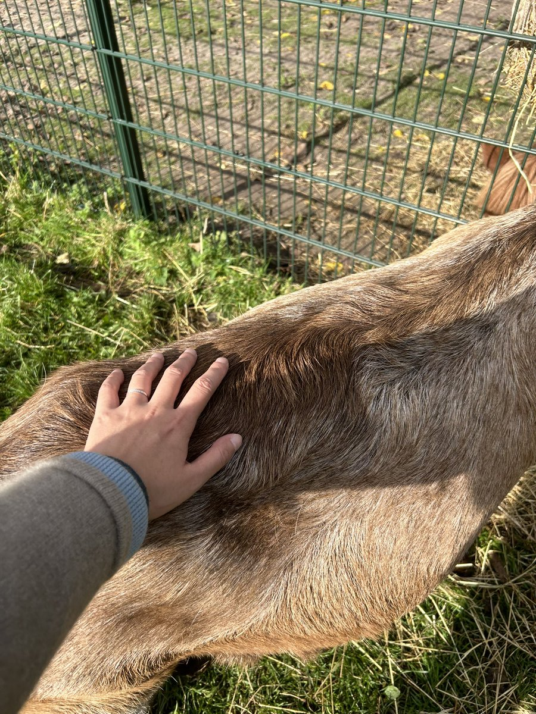
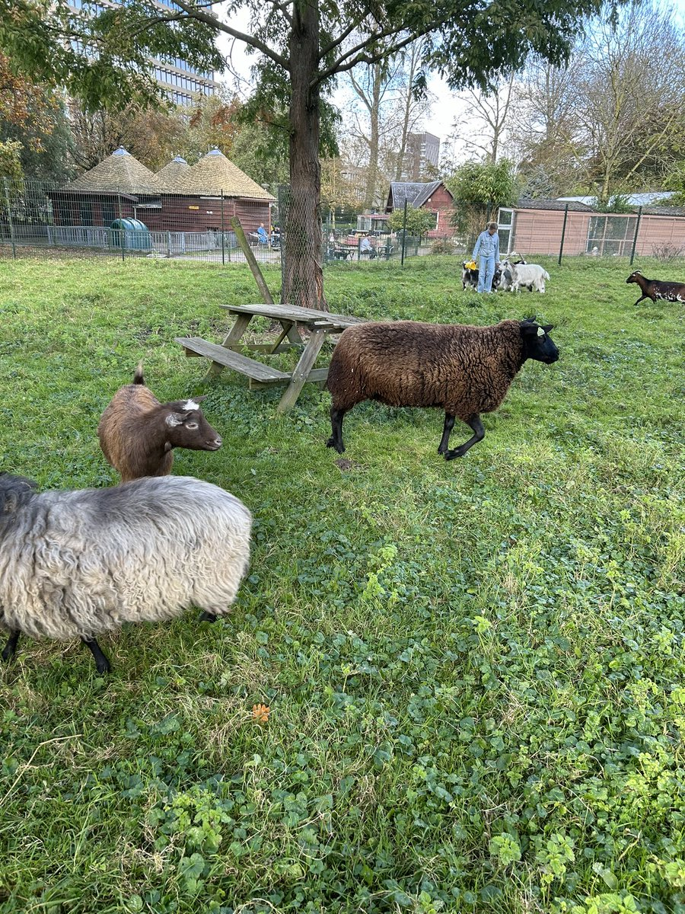
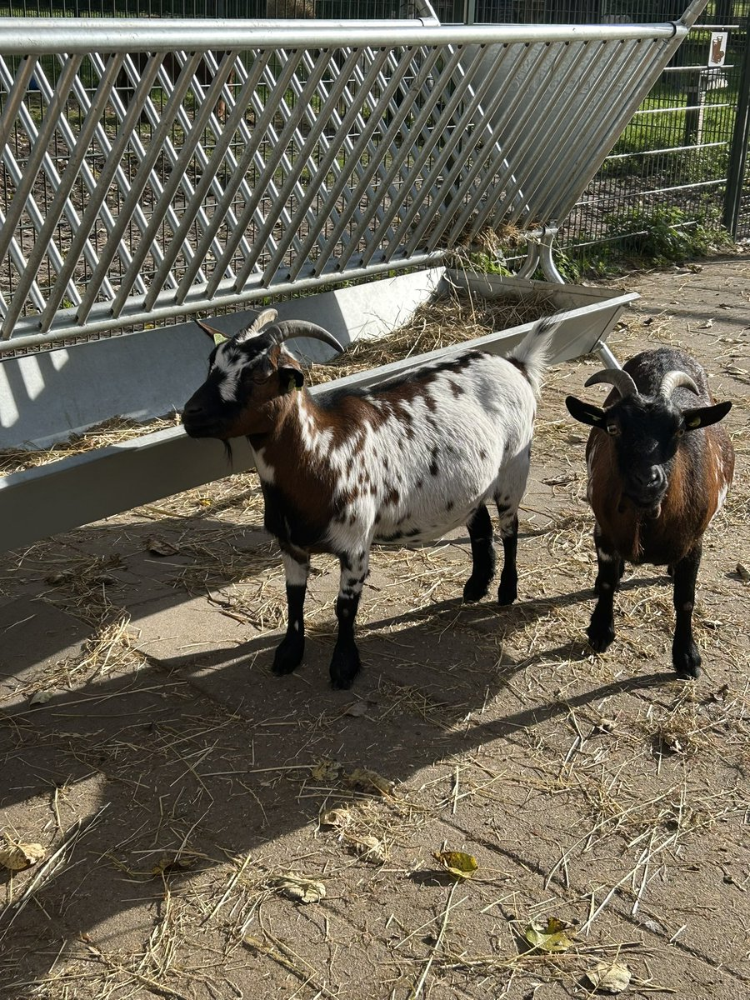
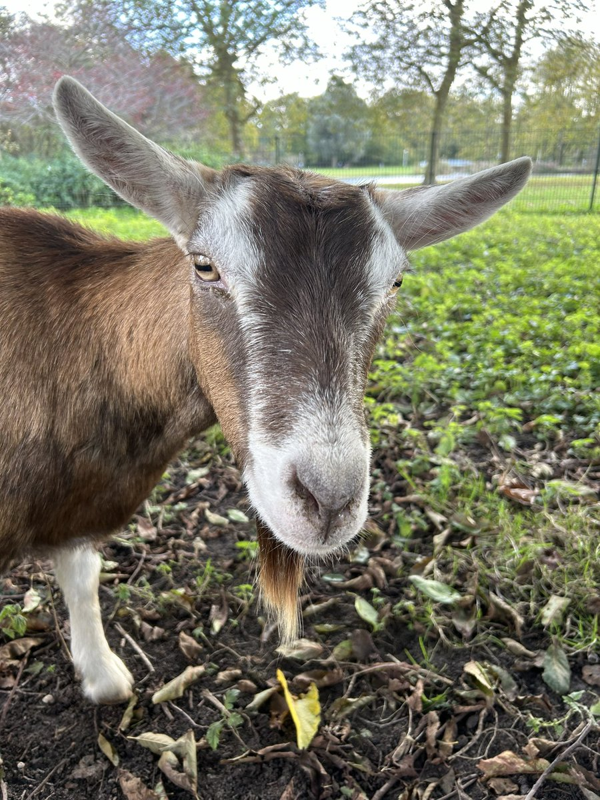

北雁冬翼（simone luxem）🏳️⚧️🏳️🌈🔬
@Simone_Luxem
@isabella_mumu 啊，我对着羊叫了好久，结果一只羊都没理我，没有一只过来让我摸的…
还是牛好，看到人站在栅栏口就会自己过来给人摸…




Isabella
@isabella_mumu
我对荷兰的印象其实不错的，我在荷兰发现很多公园里面有动物，不收费，可以自己把门打开进去玩，但是记住要关门。
有英文说明。
荷兰的这些羊，对我也挺友好的。
因为这个公园比较偏僻，我的credit card刷不动，我也没有零钱，荷兰小姑娘还给我买饮料。 https://t.co/doFb5F466t